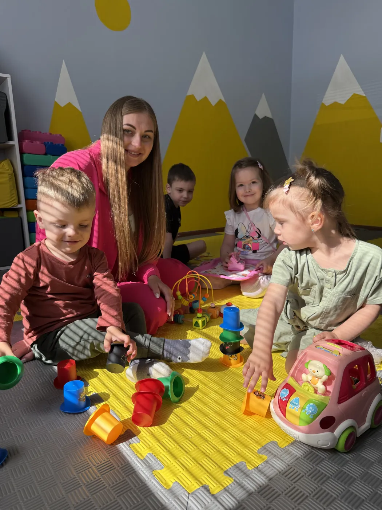
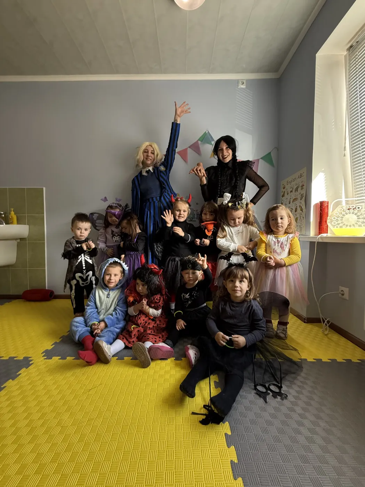
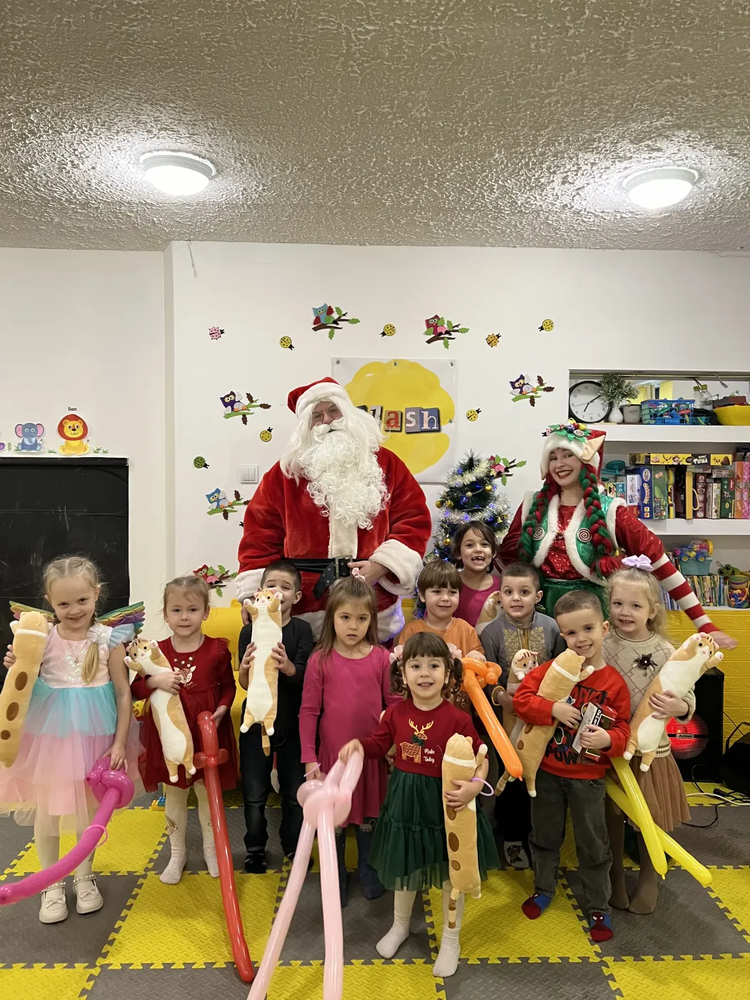
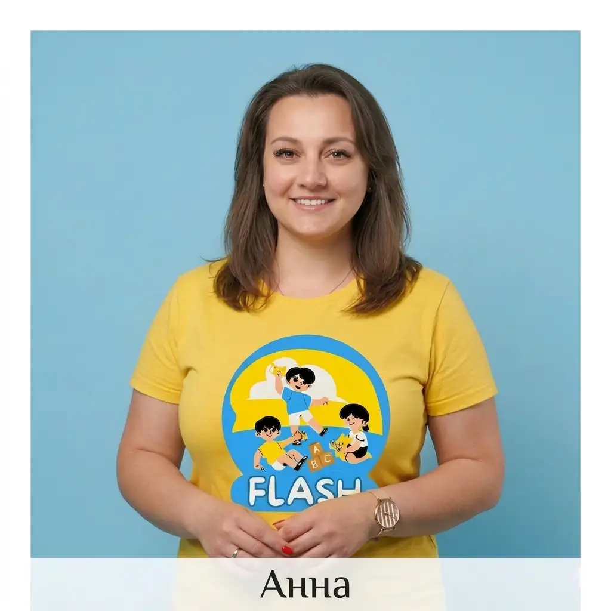
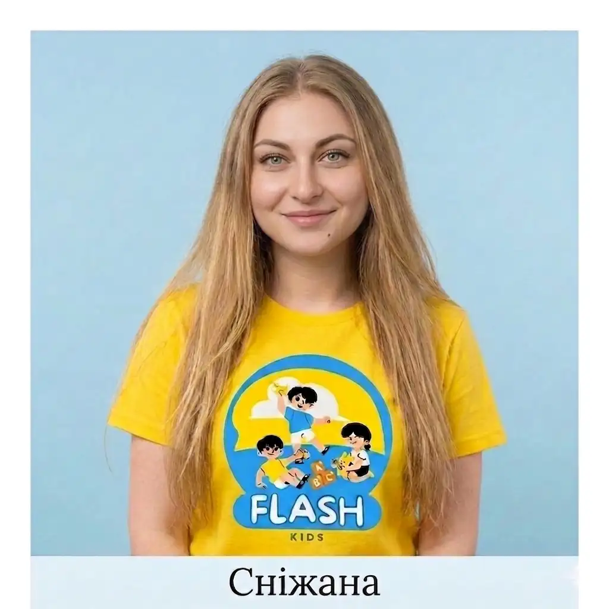

Приватний міні-садок у Дніпрі, Лівий берег Flash Kids
Групи до 8 дітей, вихователі з психологічною освітою, 9 напрямків розвитку та 4-разове харчування — усе в одному абонементі. Приймаємо дітей від 2,5 років.
3 причини довірити нам найцінніше
Перерахування днів
Якщо дитина захворіла — день не згорає. Ми переносимо його на наступний місяць. Ви платите лише за дні, коли малюк дійсно відвідує міні-садок.
Без доплат
Одна ціна за день покриває все: заняття, матеріали та харчування. Жодних окремих рахунків за гуртки чи «додаткові послуги» в кінці місяця.
Професійний кейтеринг
Тільки найсвіжіші продукти, перевірені роками. У нашому міні-садку ваша дитина буде їсти все — і з задоволенням!
9 напрямків розвитку, які входять у вартість абонементу
Логопед
Коли дитина починає говорити чітко — і раптом ще впевненіше про себе заявляє.
Англійська
Не зубріння, а перші «hello» з усмішкою і розумінням. Ігрова методика.
Театр
Коли сором'язливість змінюється на «дивись, як я можу!» Розкриваємо таланти.
Музика
Ритм, який відчувається не тільки в музиці, а й у настрої. Спів, ритміка, інструменти.
Малювання
Тут немає «правильно» чи «неправильно» — тільки фантазія дитини.
Математика
Коли навчання стає грою, а інтерес — звичкою. Логіка та розвиваючі заняття.
Підготовка до школи
Репетитор для дошкільнят. Читання, письмо, рахунок — все, що потрібно першокласнику.
Конструювання
Від простої вежі до складного механізму. Просторове мислення та дрібна моторика.
Кулінарні майстер-класи
Готуємо разом з малятами різні прості страви: від домашнього морозива до італійської піци.
Безпека дітей у міні-садку на Лівому березі
Ви можете бути впевнені, що ваша дитина під надійним захистом.
Укриття (дві стіни)
Під час тривог переводимо дітей у безпечну внутрішню зону за правилом двох стін. Батьки одразу отримують фото- й відеозвіт у Telegram.
Відеонагляд
Приміщення міні-садка під постійним відеонаглядом протягом усього дня.
Переваги приватного міні-садка Flash Kids у Дніпрі
До 8 дітей
До 8 дітей замість 25-30, як у звичайному дитячому садку — максимум уваги кожній дитині
Вихователі-психологи
Наші вихователі мають психологічну освіту, що допомагає на найвищому рівні адаптувати дитину до міні-садка і з любов'ю соціалізувати її
Здорове харчування
Сніданок, фруктовий перекус, ситний обід з першим та другим (м'ясо, гарнір), компот або чай, а також ситний підвечірок після сну.
9 програм
Логопед, англійська, театр, музика, малювання, математика, підготовка до школи, конструювання та кулінарні майстер-класи.
Повний день
Працюємо з 8:00 до 18:00, понеділок–п'ятниця
Відгуки батьків
Реальні відгуки родин у Google — читайте на нашій сторінці
Як проходять наші дні





.webp)


Вихователі міні-садка Flash Kids
Люди, які створюють атмосферу довіри та розвитку
Анастасія
Власниця / Засновниця

Анна
Психолог-педагог
Яна
Вихователь

Ніколь
Помічник вихователя
Відгуки батьків про міні-садок Flash Kids у Дніпрі
⭐ Реальні відгуки батьків у Google. Читати всі відгуки →
«Улюблений дитячий садок на лівому березі! Спасибі вихователям за підхід до моєї дитини, боялися вперше йти в сад — у Flash Kids адаптація пройшла легко та швидко, харчування на вищому рівні. Молодша чекає, коли піде до вас.»
«Дочка ходить у сад уже рік і весь рік супроводжується словами: «мам, а я піду завтра в садок?» Дитина завжди в хорошому настрої і із задоволенням відвідує Flash Kids. Ми з чоловіком дуже вдячні!»
«Дитина вже більше року ходить із задоволенням! Дуже раджу садочок, є з чим порівняти. Дівчата привітні, професіональні, люблять свою роботу.»
Ціни на приватний міні-садок у Дніпрі
- ✓ 2 прийоми їжі (до сну)
- ✓ Ранкові заняття
- ✓ Логопед, англійська
- ✓ Соціалізація
- ✓ 4 прийоми їжі
- ✓ Всі розвиваючі заняття
- ✓ Сон та прогулянки
- ✓ Театр, малювання, музика
Можлива оплата потижнева. Деталі — за телефоном.
3 кроки до нашої родини
Як відбувається знайомство та м'яка адаптація
Дзвінок або повідомлення
Зателефонуйте нам або напишіть в Instagram, Viber чи Telegram. Ми відповімо на всі запитання та підберемо зручний час.
Екскурсія та знайомство
Приходьте до нас в гості. Ви зможете оглянути простір, поспілкуватися з вихователями та відчути атмосферу.
Пробний день та адаптація
Дитина поступово звикає до колективу: від кількох годин до повного дня під дбайливим наглядом.
Поширені запитання
Відповіді на те, що найчастіше цікавить батьків
Міні-садок на Лівому березі Дніпра — як нас знайти
Адреса
вул. Василя Макуха, 1
Дніпро, Індустріальний район, Лівий берег
Поруч: вул. Калинова, Образцова,
Байкальська
Анастасія
+38 (063) 418-32-23Графік
Пн–Пт: 8:00 — 18:00
Сб, Нд: вихідний